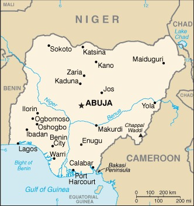
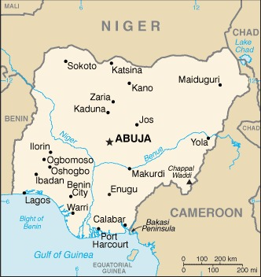

Location
Nigeria is located in Western Africa, bordering the Gulf of Guinea, between Benin and Cameroon.
Through pre-colonial times, the area of Nigeria was made up of many ethnic groups that had different languages and traditions. The United Kingdom colonized Nigeria and this created British influence.
After World War II, Nigeria gained its independence from the UK on October 1, 1960, the country was mostly under military rule. After the death of a military head of state in , there was a political transition.
The following year, a new constitution was written, and the country transitioned to a civilian government. The government continued working on institutionalizing democracy and rebuilding the economy, which is heavily reliant on petroleum.
Currently, Nigeria is experiencing its longest civilian ruled government. In their latest election in , there were still issues of voting irregularities, intimidation, and violence. There is still a lot of tension between ethnic and religious groups.
Nigeria is located in Western Africa, bordering the Gulf of Guinea, between Benin and Cameroon.
| Country | Distance(km) |
|---|---|
| Benin | 809 |
| Chad | 85 |
| Niger | 1608 |
Nigeria has the largest population of any African Nation, the most populated parts being in the South and Southwest.
In , Nigeria’s population was estimated to be 214,028,302, making it the 6th most populated country.
Nigeria is composed of over 250 different ethnic groups.
There are over 500 indigenous languages spoken in Nigeria.
The Capital of Nigeria is Abuja. It is located in the center of the country. Lagos was the capital before it was replaced by Abuja in .
The government type in Nigeria is the Federal Presidential Republic.
Nigeria gained its independence from the United Kingdom on